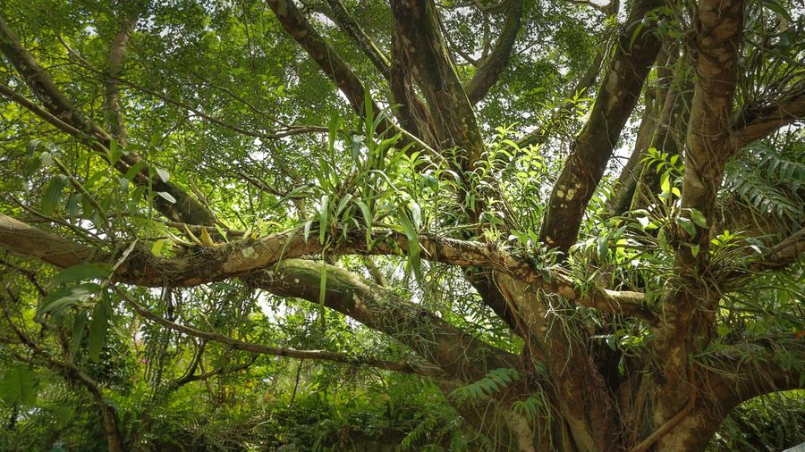
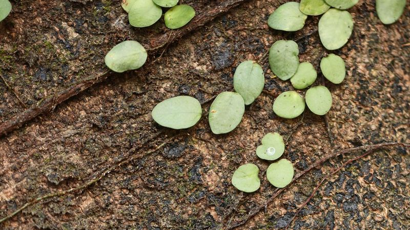
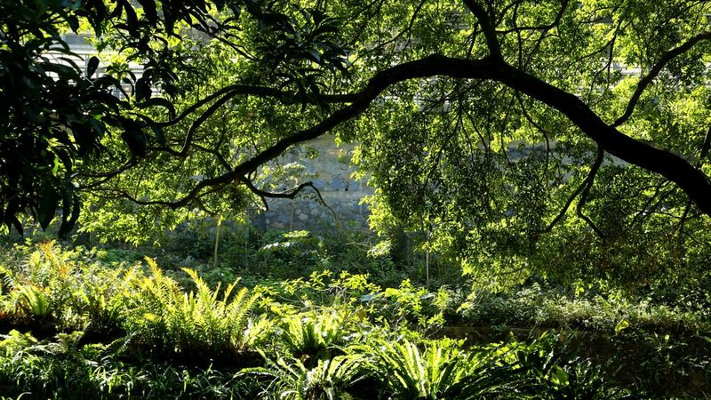

Self-guided
Audio Journey
自助語音旅程
Step off the path. Slow down. Let the forest speak.
放慢腳步，讓自然引路。每條步道設有多個聆聽站，帶領你與大地深連。
Why we created this journey
我們為何創作這段旅程
In a city that never stops, KFBG is a place to remember what stillness feels like. These audio journeys guide visitors into a deeper relationship with nature — not through facts, but through presence.
在這個永不停歇的城市裡，嘉道理農場暨植物園是讓人重拾寧靜的地方。這些聆聽之旅引領訪客與自然建立更深的聯繫——不是透過知識，而是透過當下的存在。

Five stops through the lower hillside. Touch bark, breathe soil, listen to water.
穿越下山區的五個站點。觸摸樹皮，呼吸土壤的氣息，聆聽流水聲。


Loading map…
地圖載入中…
Privacy & Cookies
私隱與 Cookie
Last updated 14 August 2026最後更新：2026 年 8 月 14 日
Records and analytics
記錄與分析
Your interactions with this app are recorded for data analysis, so that the content can be improved. This includes technical information such as device type, browser and approximate area. We do not collect your name, email address or phone number, and we cannot identify you.
您在本應用程式內的互動會被記錄，用作數據分析，以改善內容。記錄範圍包括裝置類型、瀏覽器及大概地區等技術資料。當中不會收集您的姓名、電郵或電話號碼，我們亦無法辨識您的身分。
Cookies
Cookie
This app uses a third-party analytics service, which stores cookies on your device. The data is read in aggregate only. You may block or delete these cookies in your browser settings — the app works normally without them.
本應用程式使用第三方分析服務，會在您的裝置存放 cookie。相關資料只作整體分析。您可在瀏覽器設定中封鎖或刪除；即使封鎖，本應用程式仍可正常使用。
Offline use
離線使用
Downloaded audio is stored on your own device and is never uploaded. Deleting this app, or clearing this site's data in your browser, removes everything held on your device.
已下載的音頻儲存在您的裝置上，不會上傳。刪除本應用程式或在瀏覽器中清除本網站資料，即可移除裝置上儲存的一切。
This notice covers the Self-guided Audio Journey. KFBG's general website terms and privacy policy apply in addition.
本說明適用於自助語音旅程。嘉道理農場暨植物園網站的一般條款及私隱政策同時適用。